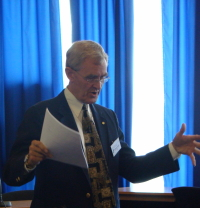

|
 |
TEACHING PSYCHOLOGY AND TEACHING ACADEMIC PSYCHOLOGISTS: A CANADIAN PERSPECTIVEThe present paper examines efforts to improve the pedagogical training of graduate students in Canadian psychology departments. In the context of teaching graduate students “how to teach,” the Chairs of 32 Canadian psychology departments (53.3% response rate) completed the Questionnaire on Training for Teaching. This survey instrument revealed that the most utilized methods for training graduate students were a departmental teaching assistantship (88%) and a university-wide course or seminar on teaching (52%); other popular approaches included attendance at a Graduate Student Teaching Day (48%) and peer mentoring (24%). In contrast, the main preferences of faculty members for improving their own teaching were program and/or organizational development training (68%), non-required student evaluations of the professor and the course (59%), colloquia or seminars on teaching/learning issues (56%), publications about teaching (56%), and attending teaching conferences (53%). The most frequently perceived barriers to pedagogical training were the precedence of more important courses in the development of the graduate curriculum (44%), teaching not a departmental priority (32%), lack of personnel to offer a course in pedagogy (24%), and faculty preference for a commitment to research rather than teaching (24%). Finally, competency in research was favoured over competency in teaching in candidates applying for tenure-track positions; though research competency was valued similarly by Chairs of undergraduate and graduate departments, undergraduate Chairs placed a significantly greater emphasis on teaching competency than did graduate Chairs A number of topics central to teaching psychology at the undergraduate level in Canada are also outlined in the present paper, among them: (i) the characteristics of Canadian psychology students, for example, the increasing proportion of women in the discipline; (ii) the healthy state of psychology in Canadian universities (with introductory psychology the most heavily enrolled undergraduate course in many institutions, and the numbers of students choosing Honours Psychology as their major rising steadily over the past several years); (iii) types of textbooks (and their roles) in Canadian psychology courses; (iv) the place of technology in the teaching of psychology in Canada; and (v) issues and problems facing Canadian psychology teachers, most notably, the enormous challenge of putting a distinctively national stamp on the teaching of psychology, given the academic juggernaut that is our southern neighbour, the United States of America. Finally, though I cannot claim such with respect to Ivan Petrovich Pavlov, in the interests of international cooperation among teachers of psychology, it is my intention to share with the audience my direct and unbroken connection to (i) the most famous “psychologist “ ever to live, namely, Sigmund Freud, and (ii) the father of modern scientific psychology, to wit, Wilhelm Wundt. This I would hope to do so that for ever after my listeners can themselves claim the same connection (albeit one degree of separation further removed!). |
© 2008 Victor Karandashev